D.1 Assignment: The Spectral Slope
D.1.1 Example of using --ply functions
Let’s try to use as few commands as possible to analyse all three timeseries. The easiest way to do this is to use the so-called apply family of functions.
These functions pass the contents of a list object to a function. Suppose we need to calculate the means of column variables in 40 different SPSS .sav files stored in the folder DAT. With the rio package loaded we can execute the following commands:
data <- lapply(dir("/DAT/",pattern=".sav$"),import)
out <- sapply(data,colMeans)The first command applies import to all files with a .sav extension found in the folder /DAT. It creates a dataframe for each file which are all stored as elements of the list object data. The second line applies the function colMeans to each element of data and puts the combined results in a matrix with the dataset ID as columns (1-40), dataset variables as rows and the calculated column means as cells.
R comes with several apply functions installed, but an easier interface is provided by package plyr. When plyr is loaded you can use functions of the type XYply where X denotes the first letter of the input structure and Y the ouput structure: l for list, d for 'data.frame, a for array. So, laply() expects a listobject as input and will try to create an array as outout. There is also a special symbol for Y, the underscore _ if no output is expected, e.g. when plotting, l_ply.
D.1.2 Data preparation
Let’s prepare these series for spectral analysis.
library(plyr)
TSlist <- list(TS1=TS1$TS1,TS2=TS2$TS2,TS3=TS3$TS3)
# Plot raw
l_ply(TSlist, plot.ts)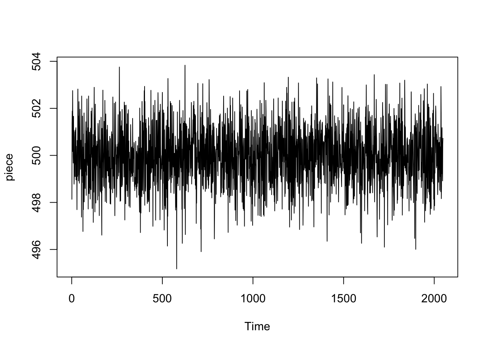 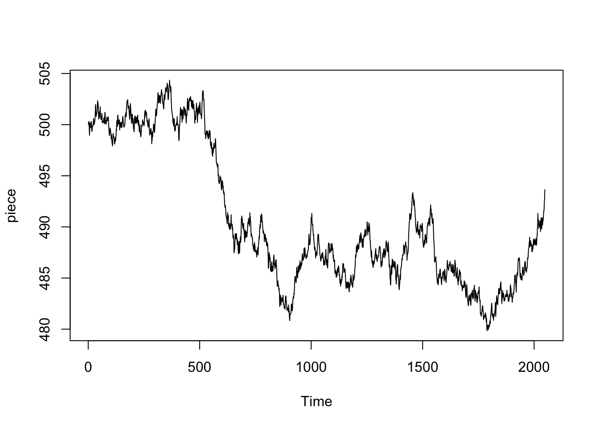
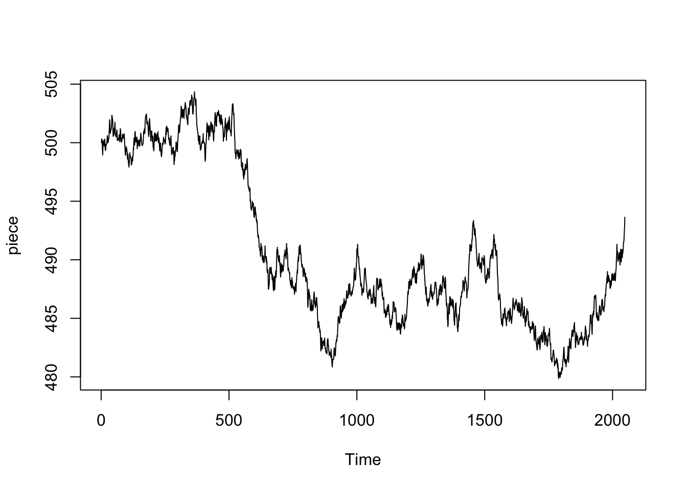
# Normalise
TSlist.n <- llply(TSlist,scale)
# Plot normalised
l_ply(TSlist.n, plot.ts)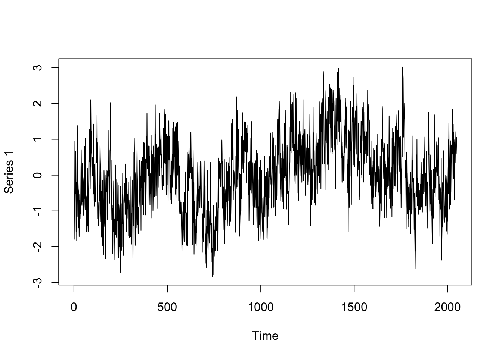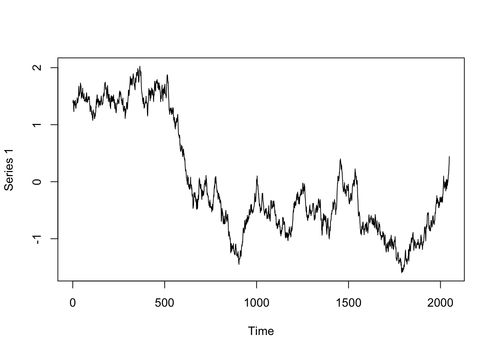
# Detrend
TSlist.nd <- llply(TSlist.n, detrend)
# Plot normalised, detrended
l_ply(TSlist.nd, plot.ts)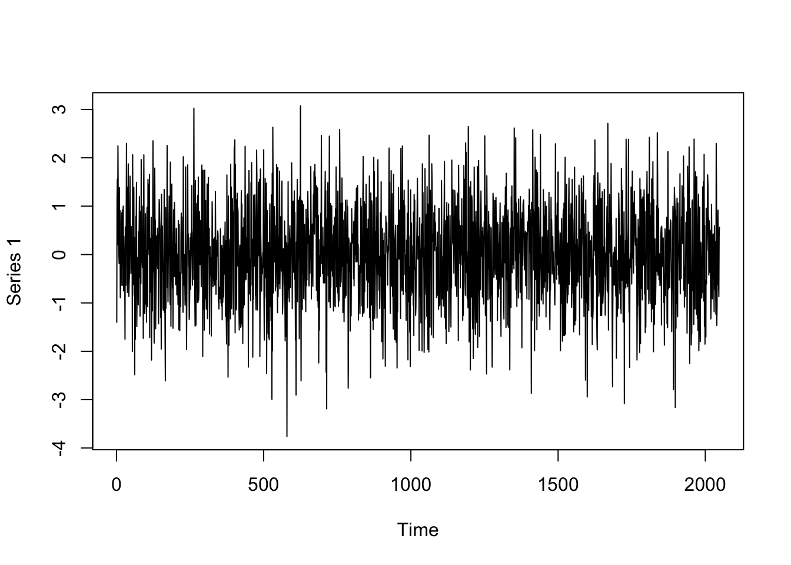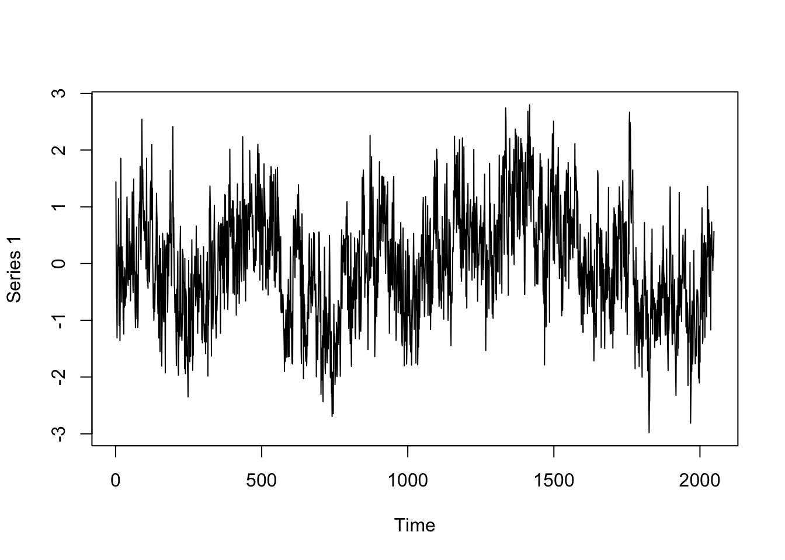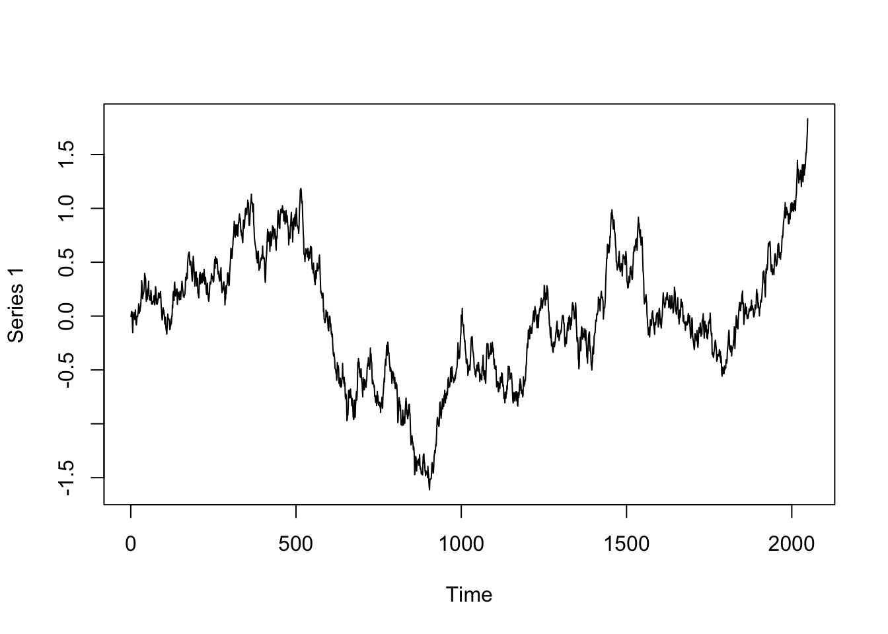
D.1.3 Time-series length
Another preparation concerns checking wether the length of the series is a power of 2 (or 10). This is necessary for the Fourier transfrom to run smoothly. The code below uses log2 and nextpow2 to figure out whether the data length is ok.
What is different from previous uses of the XYply functions is that we now customise the function we want to execute. The input is still a list object, each element of the list is passed as a variable ts to a so-called anonymous function, a function just denoted as function(ts). The function returns a data.frame with columns pow2, the current power of 2 and nextpow2 (a function of pracma) the next power of 2.
The XYply functions will add an .id variable to the output if the input is a list with named fields. Although we create 3 data frames of one row, the d in ldply indicates these frames have to be merged if possible.
ldply(TSlist.nd, function(ts) data.frame(pow2 = log2(length(ts)), nextpow2 = nextpow2(length(ts)))) .id pow2 nextpow2
1 TS1 11 11
2 TS2 11 11
3 TS3 11 11- In this case we don’t have to take any action, \(2048\) is a power of 2.
- Actions that could be taken are: removing datapoints from the front of the series, or, padding the series with zeroes.
D.1.4 The fd.psd function
The function created for spectral analysis fd.psd() will perform normalisation and detrending by default. It also returns information about the power spectrum and log-log fit. It’s good to know about the default settings of a function, and the return values. The best place to look for them is usually the help documentation, or the vignettes that come with a package.
If you select a function in Rstudio and press F1 you’ll get the help page, If you press F2 can have a look at the code (if it is exported), or, you can call the function without parentheses fd.psd and the code will be printed to the Console.
You can also hover the cursor after you typed the name of the function to reveal the arguments and defaults:
Figure D.1: Get default values of function arguments.
Another way to get this info is to use the function formals()
formals(fd.psd)$y
$fs
NULL
$normalize
[1] TRUE
$dtrend
[1] TRUE
$plot
[1] FALSENow we know this function has arguments normalize and dtrend set to TRUE, and plot set to FALSE. We could feed the fuction the raw data, or feed it our normalised, detrended, data and change the defaults. In the XYply functions, you can just add function arguments after the function name.
# Analyse
outPSD <- llply(TSlist.nd, fd.psd, normalize = FALSE, dtrend = FALSE, plot=TRUE)
fd.psd: Sample rate was set to 1. 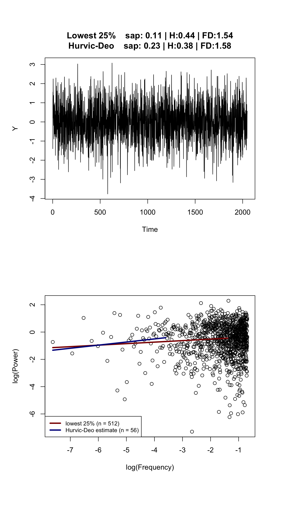
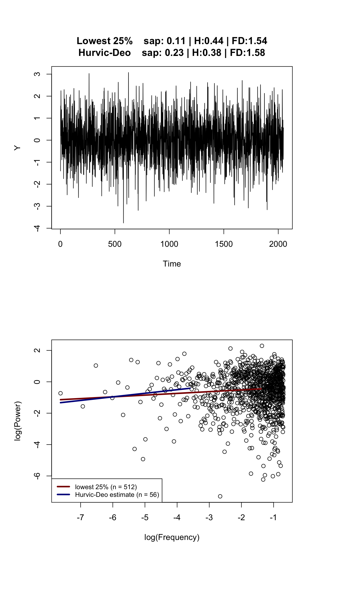
fd.psd: Sample rate was set to 1.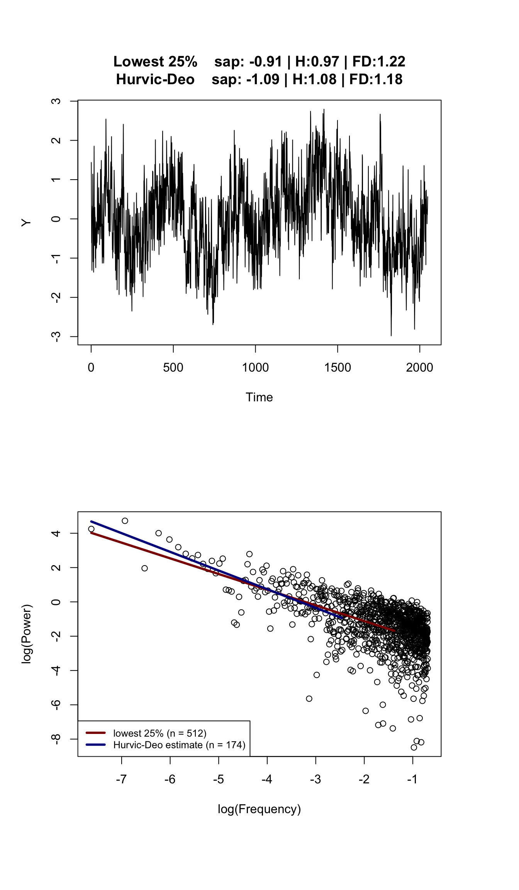
fd.psd: Sample rate was set to 1. 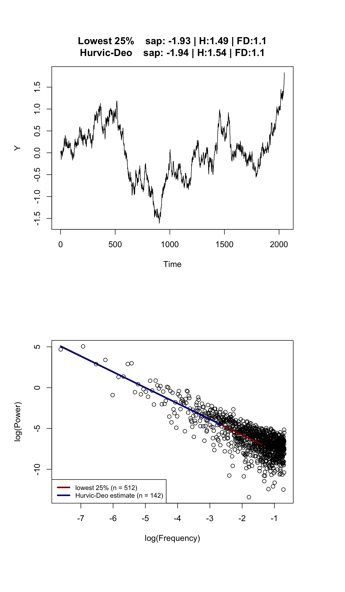
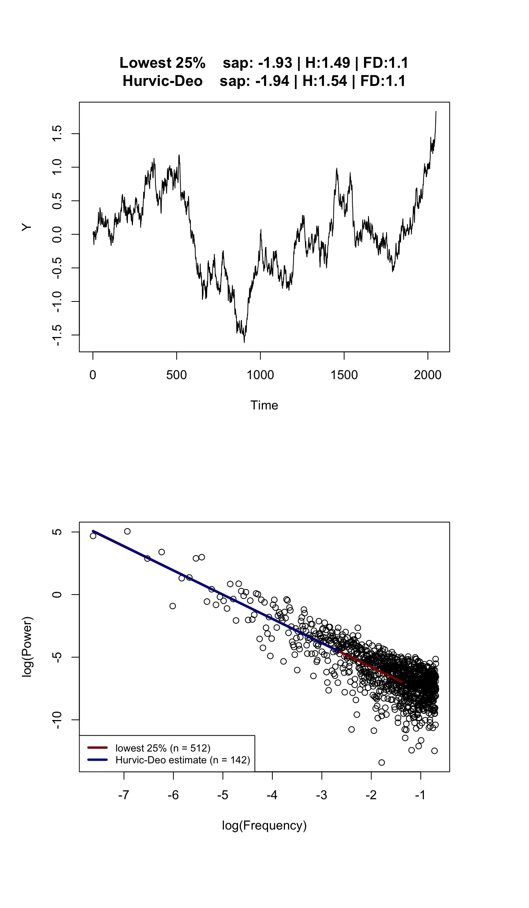